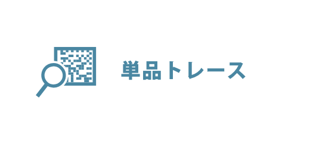
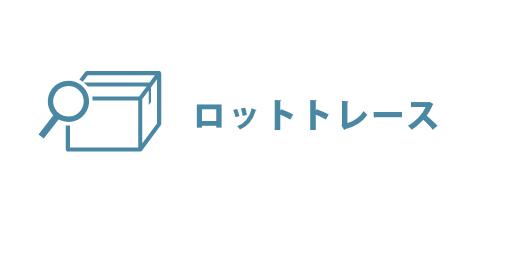
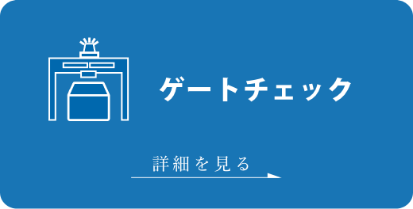
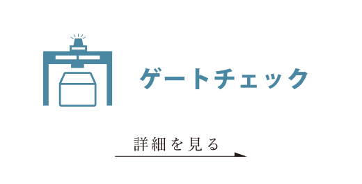
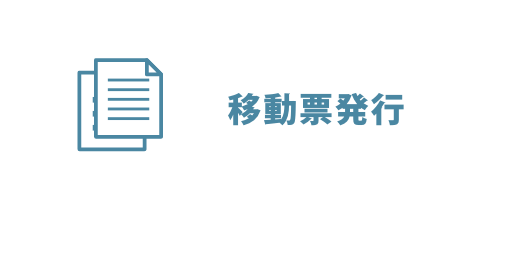

資料請求・お問合せ
0772-62-8088
品質トレサビ
システム
「トレサビシステム」×「ゲートチェック」で
品質向上と効率化を両立する。
「トレサビシステム導入の真の目的は問題を早期に解消し、 社内リソースの消費を最小限に抑えることです」
今や品質管理の中心にあるトレーサビリティの確立に必要な“いつ、どこで、誰が、どうやって、何をしたのか”などの履歴情報をデジタル化して、システム上で一元管理することは必須です。
単品やロットの通過記録を残すだけでなく、「サガネ係長のIoT 」パッケージアプリに含まれる、稼働監視、計測データ管理、設備点検、不良集計などを同一サーバにインストールし、計測データや検査結果、不良記録、点検結果など様々なデータを紐づければ、情報管理の自動化レベルは一気に向上します。br これこそが、SCADAを中心に据えたラインを構築することの価値、すなわち、品質向上と省人化を同時に実現するということです。
日進製作所独自の強み
「Tier1部品メーカー」ならではの視点
⼯程⾶ばし、⼆度加⼯、データ⽋損、データ重複を検出してアラートするゲートチェックの仕組みがあります。また、システムメンテナンスやシステム障害などが発⽣した際の運⽤フローまで含めてご提案致します。
「⽼舗設備メーカー」ならではの視点
トレサビシステムを刻印装置、計測・検査装置、搬送装置などとセットでご提供することにより、お客様によるメーカー間の仕様整合は不要となり、連携テスト済みの高度な生産システムを提供いたします。
実績豊富な 「IoTベンダー」の視点
⾒やすい、使いやすい検索画⾯で、⽇々の⽣産管理のストレスを最⼩限におさえす。また、お客様ご⾃⾝でセットアップの追加や変更が可能なため、品種の追加や品質管理項⽬の追加などに柔軟に対応可能です。
運用の簡便さと、データの信頼性を両立するバランスの良い
「トレサビ管理」で現状の様々な課題を解消します。
トレサビシステム
-

-

-  
-
